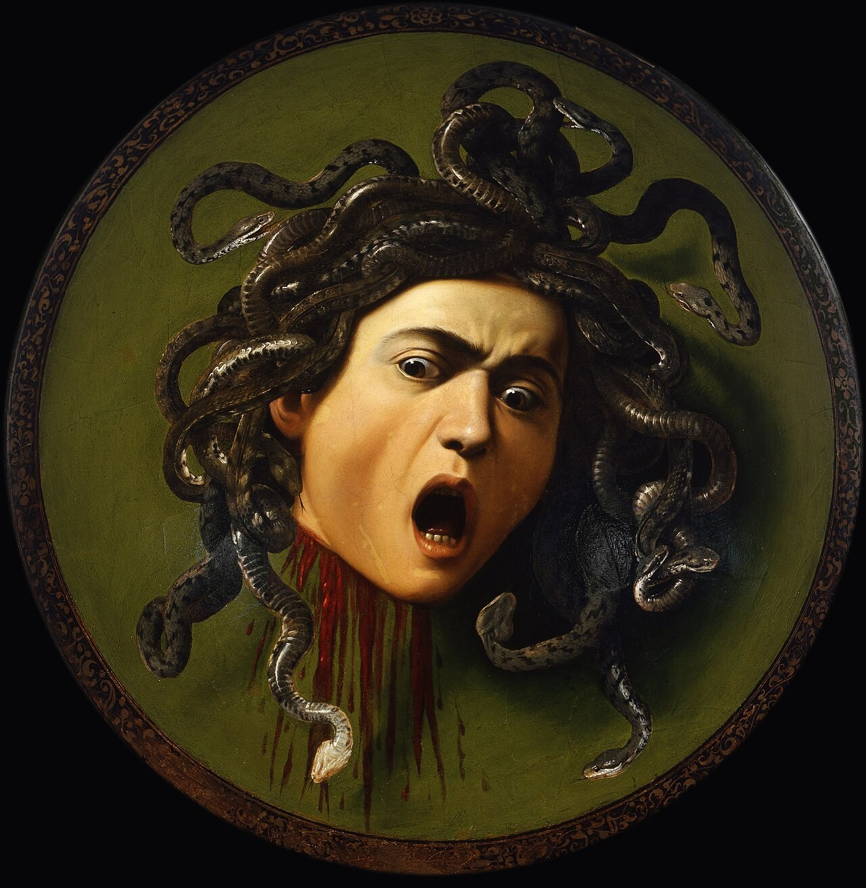
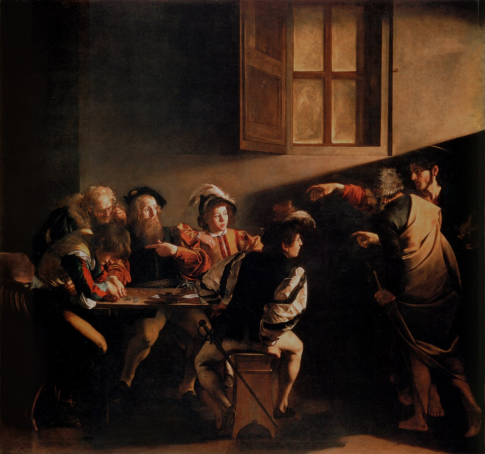
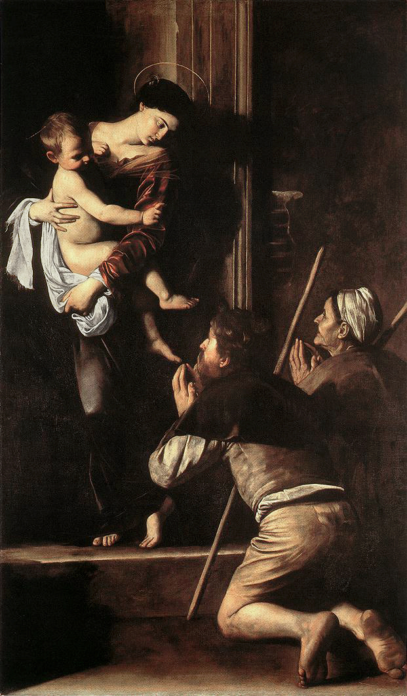

one night in Rome, about 1600 · after Caravaggio

Caravaggio painted for the churches of this one small quarter of Rome. The Calling of Saint Matthew (1599–1600) still hangs in the Contarelli Chapel of San Luigi dei Francesi, and the Madonna di Loreto (about 1604–06) in Sant'Agostino, a short walk away. The Medusa was painted on a shield for Cardinal del Monte, who took it to Florence himself as a gift for the Grand Duke of Tuscany; it was entered in the Medici wardrobe on 25 July 1598 and is now in the Uffizi. In November 1600 the painter was living in the cardinal's household at Palazzo Madama, which is now the Italian Senate.
What you did with the lantern is the thing to remember about him. Caravaggio lit his pictures with one hard light out of the dark: in The Calling of Saint Matthew the only light is a blade that comes in from the top right-hand corner, from somewhere outside the picture, and falls across the faces. He is said to have set lanterns in his studio so that his models were lit only in part, by a raking light, and the rest left in shadow. A lamp low down in front shows everything and models nothing, which is why the painter sent you to the pole. The pole, the stool and the hoisting are the game's.
What is real: the plan of the streets and squares, which is today's and agrees with Nolli's plan of 1748. The fronts of San Luigi dei Francesi (finished 1589) and Sant'Agostino (1483) are built from photographs and old prints, San Luigi without its four statues, which are of the eighteenth century; Palazzo Giustiniani is from an engraving of 1655 or later, without the doorway added about 1650. Maggi's map of about 1625 names Piazza Navona and la Scrofa, and Tempesta's of 1593 (read in a reprint of 1645) names Piazza Madama. A writer of 1604 says the painter went about with a sword at his side and a servant following him.
What is modern or conjectural: the names Corsia Agonale, Via del Salvatore and Via di Sant'Agostino are today's, since no map of the time was found that names them; the palace front in Piazza Madama was replaced in 1642 and is shown plain, after those two maps; Sant'Agostino's steps were rebuilt after 1659 and the scrolls on its front may be of 1746–50; the little church of San Salvatore, pulled down in 1905–07, follows a later description; the ordinary house fronts are Florentine pictures used again in the dark; and the wide street that crosses Piazza Madama was cut in 1936 and is chained off.
What is invented: the boy, every word spoken, the night walk, and all three scenes. The shield left Rome in 1598, two years before this walk, and nothing records how it was packed. The Calling hangs inside the church, not in a room on the square. The Madonna di Loreto was painted some years later and shows the door of a house. The Fountain of the Four Rivers and its obelisk (1651), Sant'Agnese (begun 1652) and Palazzo Pamphilj are left out; the basin at the north end of Piazza Navona is of the 1570s, and the trough in the middle is on both old maps.
Paintings: public domain, via Wikimedia Commons (Uffizi, Florence; San Luigi dei Francesi and Sant'Agostino, Rome). Maps and prints consulted: Tempesta (Metropolitan Museum of Art), Maggi, Nolli and Falda (Wikimedia Commons; Nolli's index from the Interactive Nolli Map Website, Stanford and Oregon). Ordinary house fronts and paving were painted with Google's image model for the Florence level. Street plan © OpenStreetMap contributors. Sources for every statement: research/FINDINGS.md.